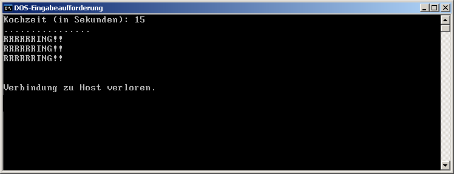

Es gibt noch eine Standalone-Eieruhr in Deiner Küche? Vielleicht sogar mit mechanischem Uhrwerk?!? Igitt!! Höchste Zeit für eine netzwerkfähige Eieruhr... ;-)
Daher sollst Du einen Server programmieren, der als Eieruhr für mehrere telnet-Clients funktioniert. Sobald man mit einem Client eine Verbindung zu diesem Server aufnimmt, wird man aufgefordert, die gewünschte Kochzeit (in Sekunden) einzugeben. Bei ungültiger Eingabe wird die Aufforderung wiederholt.
Unmittelbar nach der Eingabe beginnt die Zeit zu laufen. Jede Sekunde erscheint auf der Client-Konsole ein Punkt zum Zeichen dafür, dass die Kochzeit läuft.
Sobald die Kochkeit abgelaufen ist, erscheint die Nachricht "RRRRRRING!!" auf der Client-Konsole. Diese Nachricht wird in Abständen von 2 Sekunden solange wiederholt, bis man beim Client irgendeine Taste drückt. Danach beendet der Server die Verbindung zu diesem Client.
Beim Client sieht das dann z.B. so aus:

Die folgenden Ereignisse protokolliert der Server auf seiner Konsole:
Der Server muss mehrere Clients zugleich bedienen können. Wenn bei einem Client ein Eingabe- oder Netzwerkfehler auftritt, darf das keine Auswirkungen auf die anderen Clients haben.
Sendet man einen Text mit einem PrintWriter,
so sollte man danach die flush()-Methode
des PrintWriters aufrufen. Nur so kann man sicher sein,
dass der ganze Text gleich ins Netz geht und nicht erst
eine Zeitlang in einem Puffer hängenbleibt.
Eine ungültige Zahleneingabe erkennt man daran, dass die Methode
nextInt() eine InputMismatchException auslöst.
Wenn client der TcpSocket des Clients ist, kann man über
den Methodenaufruf client.getInputStream().available() feststellen,
ob beim Client eine Taste gedrückt wurde:
Damit man Deine Eieruhr auch hören kann, gib statt "RRRRRRING!!"
den String "\u0007" aus. Bitte sparsam verwenden, um Deine
MitschülerInnen nicht zu stören.
eieruhr.jar.
Falls Du diese Datei auf Deinem System nicht durch einen Doppelklick ausführen kannst, wechsle an der Eingabeaufforderung
in Dein Projektverzeichnis und gib folgende Befehlszeile ein:java -jar eieruhr.jar
.java-Datei, die von Dir zu bearbeiten ist, sind im Kommentar durch das Wort TODO gekennzeichnet.Punkte | Note |
0 bis 12 | 5 |
>12 bis 15 | 4 |
>15 bis 18 | 3 |
>18 bis 21 | 2 |
>21 bis 24 | 1 |
.java-Datei in ein ZIP-Archiv mit dem Namen UE_1_1_3AN_familienname.zip und lade dieses Archiv wieder auf den Moodle-Server.